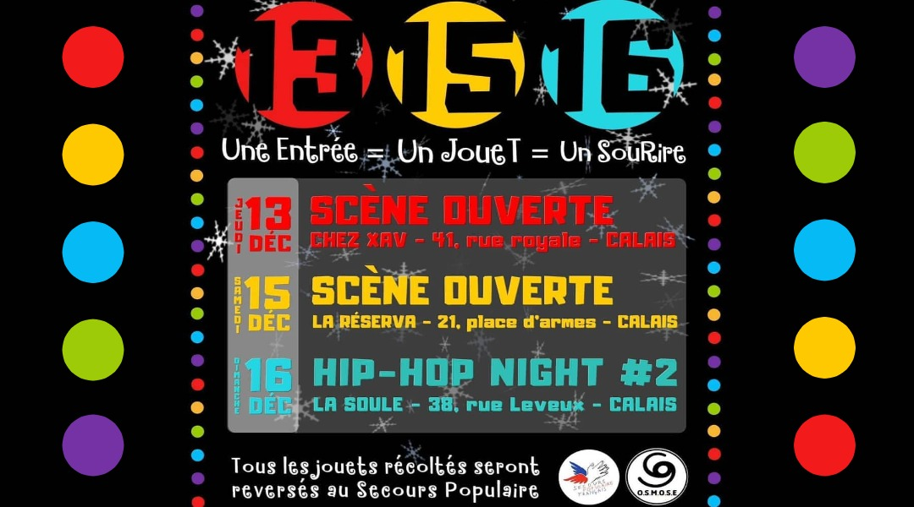

<section class="background img">
    <section class="backcolor">
      <div class="position-titre">
              <h1>Projet O.S.M.O.S.E</h1>
      </div> 
      <div class="img">
        
      </div>
      <div class="blocktexte">Le projet Osmose, est un projet réalisé en collaboration avec Damien DUNE notre Product owner et Stéphanie Tollat durant la formation Simplon. Le but du projet et simple, Osmose étant une association elle désirait avoir une meilleure visibilité sur le web.</div>
      <div class="img">
        
      </div>
      <div class="blocktexte">Toute l'équipe a décidé d'utiliser WordPress pour accomplir ce projet, qui a été terminé en fin de formation. Mais le client ne faisant pas l'effort de vouloir nous fournir un serveur le projet n'a pas encore pus être migré sur le serveur final.</div>
      <div class="img">
        <a href="http://a0ff2a602c724f3297593dc9bb951b79.testmyurl.ws/">
          <span>Voir le projet</span>
          <span>Voir le projet</span>
          <span>Voir le projet</span>
          <span>Voir le projet</span>
        </a>
      </div>
    </section>
    </section>